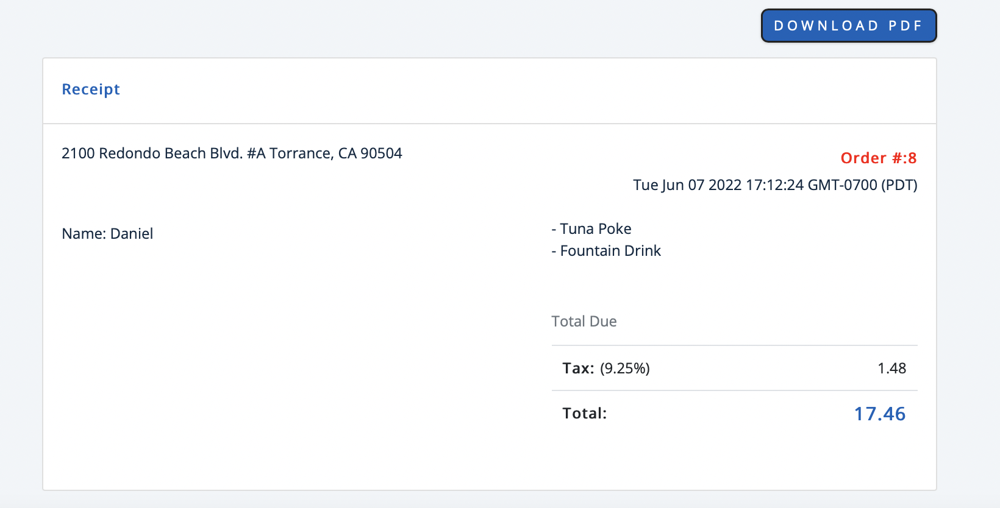

Restaurant Online Ordering System
This was a project I started back in December 2021 when was hired to do a web app for a restaurant called Maui Chicken and Poke. I was the sole creator/developer for the first year of the project before I was able to hire help.
The Front End consists of HTML,CSS, and JavaScript. There are features such as a parallax scroll effect, a top navigation bar,
Menu category buttons that update items upon clicking, options to add or remove items.
An additional feature is the backpage of the website. This is a hidden employee site that involves the employee handling portion of orders
The orders are updated real time with the database and application, so there is need for concern on that end.
The owner wanted to transition his restaurant to an online ordering system, The process for the customers works as follows. The customer
will scan a QR code of the webiste, they will make an order after viewing the menu, then they will place and order, and lastly after checking
out of the shopping cart page they will receive a reciept of their order with the next steps, which will be to wait for the order in person.
I worked on this system for 6 months before releasing it to Maui Chicken for business usage.
Technologies:
- - HTML5, CSS
- - FireBase JS
- - React JS
- - AWS (S3 & RDS)
- - Responsive Web Design for Mobile
- - Software Testing Suite
- - Yelp API
- - XML2PDF - PDF generator
Menu
BackPage

Shopping Cart

PDF Receipt (Automaticly Generated)
